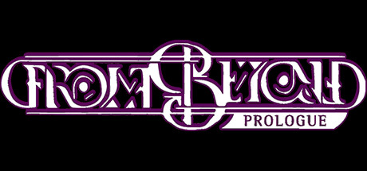

From Beyond: Prologue
Point-and-click horror · Released 7 Dec 2018 (early access 20 Nov 2018)
- Official Selection — Seattle Indies Expo 2019
- “Best in Horror” — DreamHack Atlanta 2019 Indie Playground
- Aggie Award nominee — Adventure Gamers